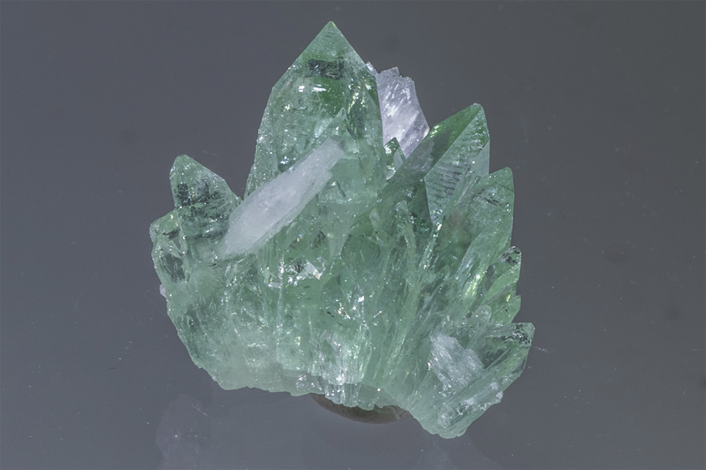

Fluorapophyllite-(K)
"Sharp Green Apophyllite with Stilbite"
VIII-00928
Ahmednagar District, Nashik Division, Maharashtra, India
Purchased from Unassigned or Unknown for $0.00
Core Collection • In Collection
Details
Storage Type: Drawer
Storage Location: C1D1 The First Drawer Miniatures
Size class: Thumbnail (0)
Dimensions: 2.7 × 2.9 × 2.1 cm
Mass: 11 g
Luster: Unrecorded